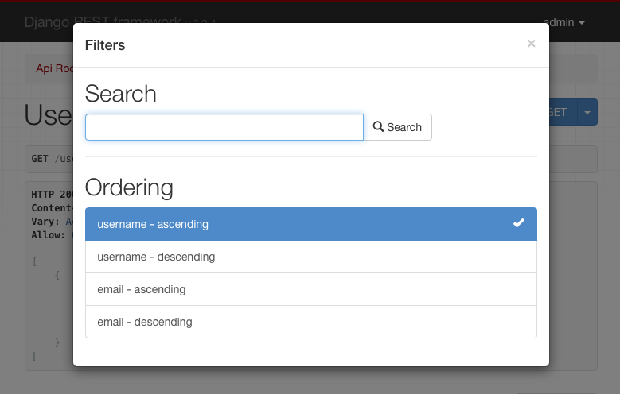

Filtering
Manager가 제공하는 루트 QuerySet은 데이터베이스 테이블에 존재하는 모든 객체를 나타냅니다. 하지만 대부분의 경우, 전체 객체 집합이 아닌 일부만 선택해야 합니다.
REST framework의 generic list view의 기본 동작은 모델 매니저가 제공하는 전체 queryset을 반환하는 것입니다.
하지만 실제로는 API가 반환하는 항목을 특정 조건에 따라 제한하고 싶은 경우가 많습니다.
GenericAPIView 를 상속하는 모든 뷰에서 queryset을 필터링하는 가장 간단한 방법은
.get_queryset() 메서드를 오버라이드하는 것입니다.
이 메서드를 오버라이드하면, 뷰가 반환하는 queryset을 다양한 방식으로 커스터마이징할 수 있습니다.
Filtering against the current user
현재 요청을 보낸 인증된 사용자와 관련된 결과만 반환하고 싶을 수 있습니다.
이 경우 request.user 값을 기준으로 queryset을 필터링할 수 있습니다.
예를 들어:
from myapp.models import Purchase
from myapp.serializers import PurchaseSerializer
from rest_framework import generics
class PurchaseList(generics.ListAPIView):
serializer_class = PurchaseSerializer
def get_queryset(self):
"""
이 뷰는 현재 인증된 사용자의
모든 구매 내역을 반환해야 한다.
"""
user = self.request.user
return Purchase.objects.filter(purchaser=user)
Filtering against the URL
URL의 일부 값을 기준으로 queryset을 제한하는 방식도 사용할 수 있습니다.
예를 들어 URL 설정에 다음과 같은 항목이 있다면:
re_path('^purchases/(?P<username>.+)/$', PurchaseList.as_view()),
URL에 포함된 username 값을 기준으로 queryset을 필터링하는 뷰를 작성할 수 있습니다.
class PurchaseList(generics.ListAPIView):
serializer_class = PurchaseSerializer
def get_queryset(self):
"""
이 뷰는 URL의 username 값으로 결정된
사용자의 모든 구매 내역을 반환해야 한다.
"""
username = self.kwargs['username']
return Purchase.objects.filter(purchaser__username=username)
Filtering against query parameters
마지막 예시는 URL의 query parameter를 기준으로 초기 queryset을 결정하는 방식입니다.
.get_queryset() 을 오버라이드하여
http://example.com/api/purchases?username=denvercoder9 와 같은 URL을 처리할 수 있습니다.
username 파라미터가 존재하는 경우에만 queryset을 필터링합니다.
class PurchaseList(generics.ListAPIView):
serializer_class = PurchaseSerializer
def get_queryset(self):
"""
URL의 `username` query parameter를 기준으로
특정 사용자의 구매 내역만 반환하도록 제한한다.
"""
queryset = Purchase.objects.all()
username = self.request.query_params.get('username')
if username is not None:
queryset = queryset.filter(purchaser__username=username)
return queryset
Generic Filtering
기본 queryset을 오버라이드하는 것 외에도,
REST framework는 generic filtering backend 를 지원하여
복잡한 검색 및 필터링을 쉽게 구성할 수 있도록 합니다.
Generic filter는 Browsable API 및 Admin API 에서
HTML 컨트롤 형태로 표시될 수도 있습니다.

Setting filter backends
기본 filter backend는 DEFAULT_FILTER_BACKENDS 설정을 통해 전역으로 지정할 수 있습니다.
예를 들어:
REST_FRAMEWORK = {
'DEFAULT_FILTER_BACKENDS': ['django_filters.rest_framework.DjangoFilterBackend']
}
또는 GenericAPIView 기반의 뷰나 뷰셋 단위로 filter backend를 지정할 수도 있습니다.
import django_filters.rest_framework
from django.contrib.auth.models import User
from myapp.serializers import UserSerializer
from rest_framework import generics
class UserListView(generics.ListAPIView):
queryset = User.objects.all()
serializer_class = UserSerializer
filter_backends = [django_filters.rest_framework.DjangoFilterBackend]
Filtering and object lookups
뷰에 filter backend가 설정되어 있으면,
리스트 뷰뿐만 아니라 단일 객체 조회 시에도 동일한 필터링 조건이 적용됩니다.
예를 들어, 이전 예제에서 ID가 4675 인 상품이 있을 때,
다음 URL은 필터 조건을 만족하면 객체를 반환하고,
만족하지 않으면 404 응답을 반환합니다.
http://example.com/api/products/4675/?category=clothing&max_price=10.00
Overriding the initial queryset
.get_queryset() 오버라이드와 generic filtering은 함께 사용 가능하며,
예상한 대로 정상 동작합니다.
예를 들어 Product 가 User 와 purchase 라는 many-to-many 관계를 가지고 있다면,
다음과 같은 뷰를 작성할 수 있습니다.
class PurchasedProductsList(generics.ListAPIView):
"""
인증된 사용자가 지금까지 구매한
모든 상품 목록을 (선택적 필터링과 함께) 반환한다.
"""
model = Product
serializer_class = ProductSerializer
filterset_class = ProductFilter
def get_queryset(self):
user = self.request.user
return user.purchase_set.all()
API Guide
DjangoFilterBackend
django-filter 라이브러리는
REST framework에서 고도로 커스터마이징 가능한 필드 기반 필터링을 지원하는
DjangoFilterBackend 클래스를 제공합니다.
DjangoFilterBackend 를 사용하려면 먼저 django-filter 를 설치해야 합니다.
pip install django-filter
그 다음 Django의 INSTALLED_APPS 에 'django_filters' 를 추가합니다.
INSTALLED_APPS = [
...
'django_filters',
...
]
이제 filter backend를 전역 설정에 추가하거나,
REST_FRAMEWORK = {
'DEFAULT_FILTER_BACKENDS': ['django_filters.rest_framework.DjangoFilterBackend']
}
개별 View 또는 ViewSet에 직접 추가할 수 있습니다.
from django_filters.rest_framework import DjangoFilterBackend
class UserListView(generics.ListAPIView):
...
filter_backends = [DjangoFilterBackend]
단순한 동등 비교(equality-based) 필터링만 필요하다면,
뷰 또는 뷰셋에 filterset_fields 속성을 지정하면 됩니다.
class ProductList(generics.ListAPIView):
queryset = Product.objects.all()
serializer_class = ProductSerializer
filter_backends = [DjangoFilterBackend]
filterset_fields = ['category', 'in_stock']
이렇게 하면 지정된 필드를 기준으로 자동으로 FilterSet 클래스가 생성되며,
다음과 같은 요청이 가능해집니다.
http://example.com/api/products?category=clothing&in_stock=True
더 복잡한 필터링이 필요하다면,
뷰에서 사용할 FilterSet 클래스를 직접 지정할 수 있습니다.
자세한 내용은 django-filter 문서와
DRF 통합 가이드를 참고하세요.
SearchFilter
SearchFilter 클래스는 단일 query parameter 기반 검색을 지원하며,
Django admin의 검색 기능을 기반으로 합니다.
사용 시, Browsable API에 SearchFilter 컨트롤이 표시됩니다.

SearchFilter 는 뷰에 search_fields 속성이 설정된 경우에만 적용됩니다.
search_fields 는 모델의 CharField, TextField 와 같은
텍스트 필드 이름들의 리스트여야 합니다.
from rest_framework import filters
class UserListView(generics.ListAPIView):
queryset = User.objects.all()
serializer_class = UserSerializer
filter_backends = [filters.SearchFilter]
search_fields = ['username', 'email']
이렇게 하면 다음과 같은 요청으로 필터링할 수 있습니다.
http://example.com/api/users?search=russell
ForeignKey 또는 ManyToManyField에 대해서도
double-underscore(__) 표기법을 사용한 관련 조회가 가능합니다.
search_fields = ['username', 'email', 'profile__profession']
JSONField 및 HStoreField 의 경우에도
동일한 표기법을 사용하여 중첩된 값으로 필터링할 수 있습니다.
search_fields = ['data__breed', 'data__owner__other_pets__0__name']
기본적으로 검색은 대소문자를 구분하지 않는 부분 일치를 사용합니다.
검색 파라미터는 공백 또는 쉼표로 구분된 여러 검색어를 포함할 수 있으며,
모든 검색어가 일치하는 객체만 결과에 포함됩니다.
공백이 포함된 인용 구문(quoted phrase) 도 지원되며,
각 구문은 하나의 검색어로 취급됩니다.
검색 동작은 search_fields 에 접두어를 붙여 제어할 수 있습니다
(이는 필드에 __<lookup> 을 추가하는 것과 동일합니다).
| Prefix | Lookup | 설명 |
|---|---|---|
^ |
istartswith |
시작 문자열 검색 |
= |
iexact |
정확히 일치 |
$ |
iregex |
정규식 검색 |
@ |
search |
전문 검색 (현재 Django PostgreSQL backend만 지원) |
| 없음 | icontains |
부분 포함 검색 (기본값) |
예시:
search_fields = ['=username', '=email']
기본 검색 파라미터 이름은 'search' 이지만,
REST_FRAMEWORK 설정의 SEARCH_PARAM 으로 변경할 수 있습니다.
요청 내용에 따라 동적으로 검색 필드를 변경하려면,
SearchFilter 를 상속하고 get_search_fields() 메서드를 오버라이드하면 됩니다.
다음 예제는 title_only 파라미터가 있을 경우에만 title 필드로 검색합니다.
from rest_framework import filters
class CustomSearchFilter(filters.SearchFilter):
def get_search_fields(self, view, request):
if request.query_params.get('title_only'):
return ['title']
return super().get_search_fields(view, request)
자세한 내용은 Django 문서를 참고하세요.
OrderingFilter
OrderingFilter 클래스는 query parameter를 통해
결과 정렬을 제어할 수 있도록 지원합니다.

기본 query parameter 이름은 'ordering' 이며,
REST_FRAMEWORK 설정의 ORDERING_PARAM 으로 변경할 수 있습니다.
예를 들어 username 기준 정렬:
http://example.com/api/users?ordering=username
역순 정렬은 필드 이름 앞에 - 를 붙입니다.
http://example.com/api/users?ordering=-username
여러 필드를 동시에 지정할 수도 있습니다.
http://example.com/api/users?ordering=account,username
Specifying which fields may be ordered against
정렬 가능한 필드는 명시적으로 지정하는 것을 권장합니다.
class UserListView(generics.ListAPIView):
queryset = User.objects.all()
serializer_class = UserSerializer
filter_backends = [filters.OrderingFilter]
ordering_fields = ['username', 'email']
이는 비밀번호 해시 등 민감한 필드로 정렬되는 것을 방지하는 데 도움이 됩니다.
ordering_fields 를 지정하지 않으면,
serializer에서 읽기 가능한 모든 필드가 정렬 대상으로 허용됩니다.
쿼리셋에 민감한 데이터가 없다고 확신할 수 있다면,
특수 값 '__all__' 을 사용해 모든 필드 정렬을 허용할 수도 있습니다.
class BookingsListView(generics.ListAPIView):
queryset = Booking.objects.all()
serializer_class = BookingSerializer
filter_backends = [filters.OrderingFilter]
ordering_fields = '__all__'
Specifying a default ordering
뷰에 ordering 속성이 설정되어 있으면 기본 정렬로 사용됩니다.
class UserListView(generics.ListAPIView):
queryset = User.objects.all()
serializer_class = UserSerializer
filter_backends = [filters.OrderingFilter]
ordering_fields = ['username', 'email']
ordering = ['username']
ordering 은 문자열 또는 문자열 리스트/튜플이 될 수 있습니다.
Custom generic filtering
직접 generic filtering backend를 구현하거나,
다른 개발자가 사용할 수 있는 설치형 앱으로 제공할 수도 있습니다.
이를 위해 BaseFilterBackend 를 상속하고
.filter_queryset(self, request, queryset, view) 메서드를 구현합니다.
이 메서드는 새로운 필터링된 queryset 을 반환해야 합니다.
Generic filter backend는 검색/필터링뿐 아니라,
요청이나 사용자별로 노출 가능한 객체를 제한하는 데에도 유용합니다.
Example
예를 들어, 사용자가 자신이 생성한 객체만 볼 수 있도록 제한할 수 있습니다.
class IsOwnerFilterBackend(filters.BaseFilterBackend):
"""
사용자가 자신의 객체만 볼 수 있도록 제한하는 필터
"""
def filter_queryset(self, request, queryset, view):
return queryset.filter(owner=request.user)
같은 동작을 get_queryset() 오버라이드로도 구현할 수 있지만,
filter backend를 사용하면 여러 뷰에 쉽게 재사용하거나
API 전체에 일괄 적용할 수 있습니다.
Customizing the interface
Generic filter는 Browsable API에서 인터페이스를 제공할 수도 있습니다.
이를 위해 to_html() 메서드를 구현해야 합니다.
메서드 시그니처는 다음과 같습니다.
to_html(self, request, queryset, view)
이 메서드는 렌더링된 HTML 문자열을 반환해야 합니다.
Third party packages
다음은 추가적인 필터 구현을 제공하는 서드파티 패키지들입니다.
Django REST framework filters package
django-rest-framework-filters 패키지는
DjangoFilterBackend 와 함께 동작하며,
관계 필터링이나 하나의 필드에 대해 여러 lookup 타입을 쉽게 정의할 수 있게 해줍니다.
Django REST framework full word search filter
django-rest-framework-word-filter 는
filters.SearchFilter 의 대안으로 개발되었으며,
텍스트에 대한 전체 단어 검색 또는 정확한 일치 검색을 지원합니다.
Django URL Filter
django-url-filter 는 사람이 읽기 쉬운 URL을 통해
안전하게 데이터를 필터링할 수 있는 방법을 제공합니다.
DRF serializer와 유사한 개념으로 filterset과 filter를 사용하며,
중첩 필터링도 지원합니다.
또한 Django QuerySet 뿐만 아니라 다른 데이터 소스에도 사용할 수 있는
범용 라이브러리입니다.
drf-url-filters
drf-url-filter 는
DRF ModelViewSet 의 Queryset 에 필터를 적용하기 위한
간단하고 깔끔하며 설정 가능한 Django 앱입니다.
요청 query parameter 및 값에 대한 validation도 지원하며,
검증에는 Voluptuous 파이썬 패키지를 사용합니다.
Voluptuous의 가장 큰 장점은
query parameter 요구사항에 맞는 커스텀 검증 로직을 직접 정의할 수 있다는 점입니다.